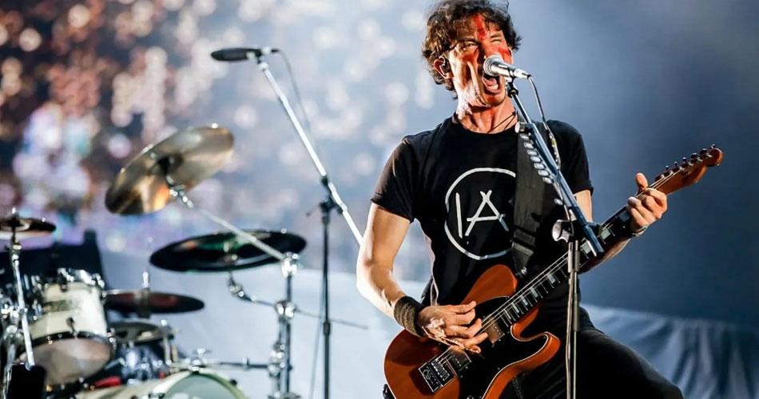
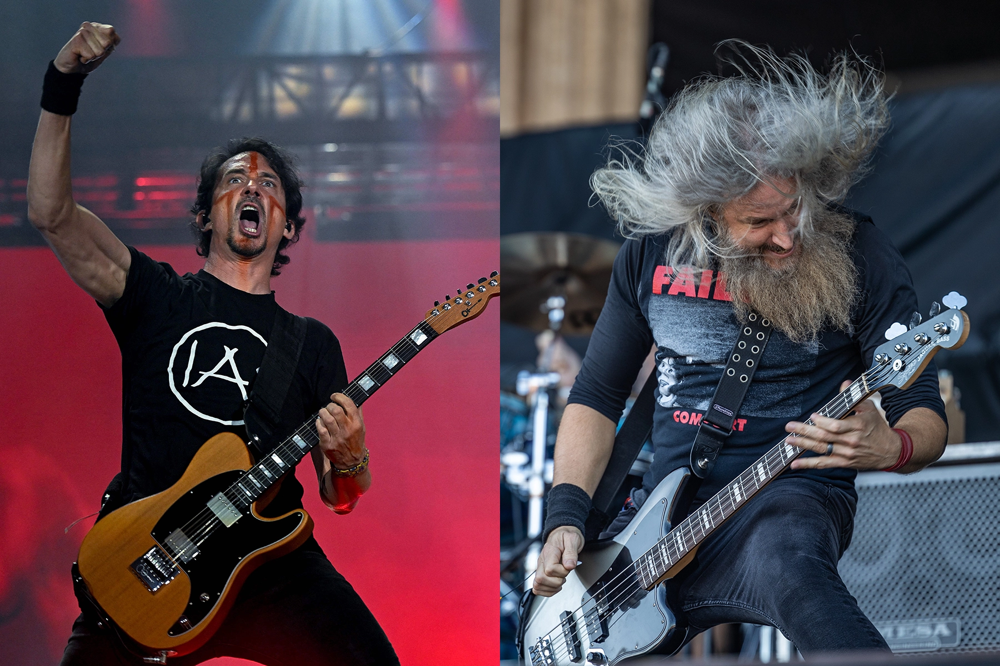
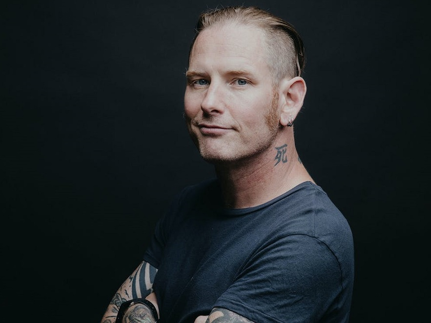
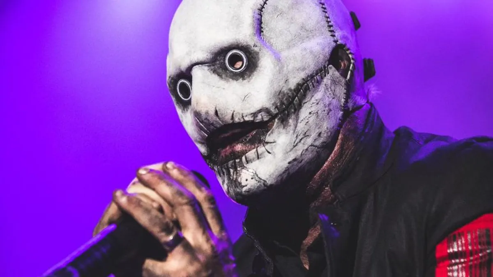

Como banda favorita tenho Gojira, uma banda de metal progressivo, e como cantor favorito, Corey Taylor, vocalista da banda Slipknot.

A banda Gojira é caracterizada e conhecida pelo seu estilo de metal progressivo, que é basicamente a melodia com foco nos instrumentos.


Corey Taylor é conhecido por ser um cantor com uma das vozes mais originais, além das máscaras "assustadoras".
